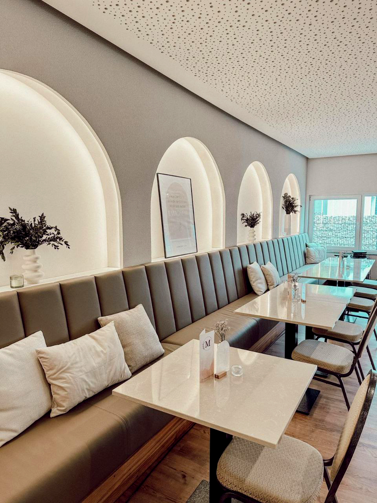

Boschstraße 26 · Speyer
Ein Abendcafé, in dem du zahlst, was du geben möchtest.
Café Manna hat freitags und samstags abends geöffnet. Es gibt warme Gerichte, Getränke, Kaffee und Kuchen. Feste Preise gibt es nicht – du gibst eine Spende. Was nach den Kosten übrig bleibt, geht an das Hilfswerk CDH-Stephanus.
·

Auf einen Blick
Alles Wichtige, falls du zum ersten Mal kommst.
- Wann
- Freitag & Samstag
18 – 23 Uhr - Wo
- Boschstraße 26, 67346 SpeyerIm Gebäude des CDH-Stephanus e.V.
- Was es gibt
- Warme Hauptgerichte, Getränke, Kaffee & KuchenDazu wechselnde Specials
- Was es kostet
- Keine festen PreiseDu zahlst mit einer Spende in selbst gewählter Höhe
- Wer es betreibt
- Ehrenamtliche des Café Manna e.V.Gemeinnütziger Verein aus einer christlichen Gemeinde
- Platz
- Rund 80 SitzplätzeReservieren ist am Wochenende sinnvoll

Wohin deine Spende geht
Die Gesichter an der Wand
Im Café hängen acht Porträts. Das sind Kinder und Jugendliche, für die das Café Patenschaften übernommen hat – vier in Indien, vier in Uganda.
Von den Spenden werden zuerst die laufenden Kosten des Cafés bezahlt. Der Rest geht vollständig an das Christliche Diakonische Hilfswerk Stephanus, das seit 1988 Hilfsprojekte in mehreren Ländern unterstützt.
Mehr zum Verein und zum HilfswerkKomm einfach vorbei.
Du musst niemanden kennen und nicht Teil der Gemeinde sein. Am besten reservierst du vorher einen Tisch.